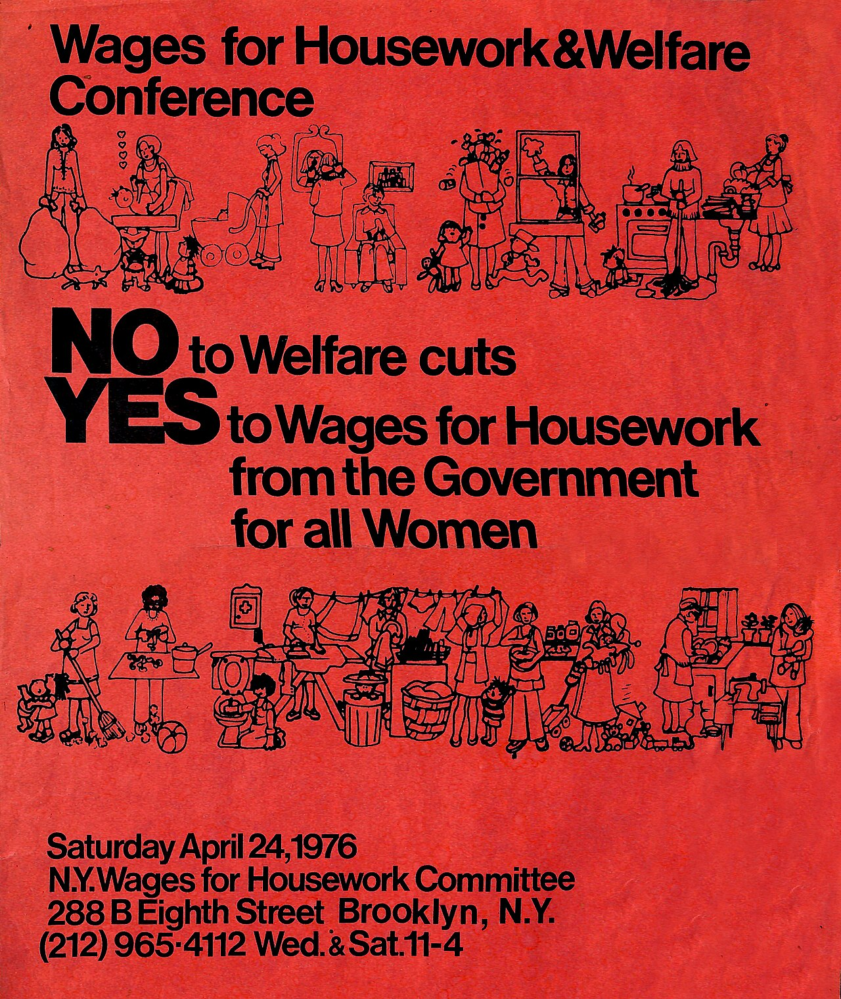
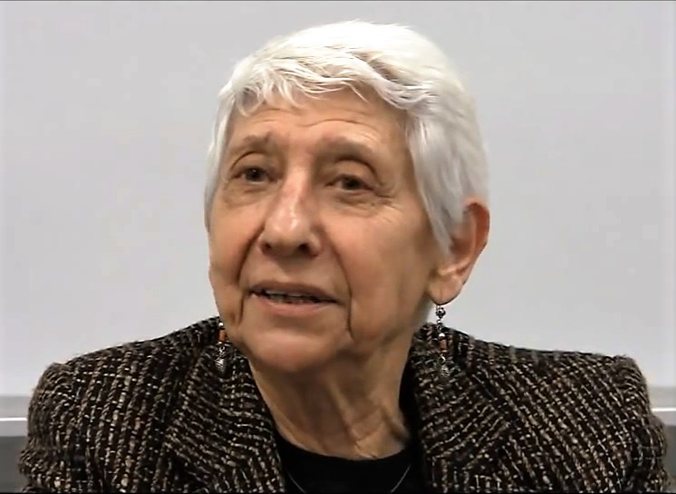
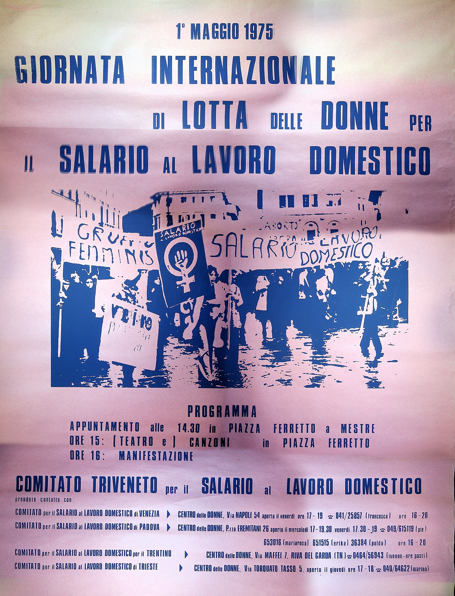

Monday · Feminism
: the 1970s campaign to treat unpaid as work
In 1972 a group of feminists in Padua, London, and New York began to argue that is work that capitalism depends on and does not pay for. This lesson explains that argument first, then follows the campaign from Padua to New York, the pamphlet , the criticism it drew from other feminists, and its return in debates about and .


This lesson describes as a specific campaign with dated groups, texts, and arguments. Feminists disagreed sharply about it then and still do, so the lesson presents the criticism next to the claims. Quotations from come from her 1975 pamphlet. Dates for the smaller groups, including , are given only as precisely as the sources allow.
Select any words, or tap a dotted term.
- 1848 Marx and Engels: The Communist Manifesto and Friedrich Engels publish The Communist Manifesto, analyzing capitalism and class struggle. Later Marxist feminists argued that 's analysis of labor left out the of the household.
- 1867 Marx: Capital, Volume 1 's analyzes how workers sell their for wages and how depends on that being renewed every day and every generation. writers asked who does the work of renewing it.
- 1963 Betty Friedan: The Feminine Mystique 's book describes the dissatisfaction of middle-class American housewives confined to domesticity and encourages women to enter paid work. writers later argued that this left the unpaid work at home untouched.
- 1969 Margaret Benston: 'The Political Economy of Women's Liberation' argues that women's unpaid household work is a form of production on which the economy relies, an early statement of an argument that fed into the of the 1970s.
- 1970s The domestic labour debate Marxist feminists, including and , debate whether produces value in 's sense and whether a wage demand is strategically useful or reinforces women's domestic role.
- 1972 Manchester conference and the International Feminist Collective In March, presents 'Women, the Unions and Work, or What Is Not to Be Done' in Manchester, listing among her demands. In 1972 the is formed in Padua, Italy, to launch the campaign, with , , , and named as founders.
- 1972 Dalla Costa and James: The Power of Women and the Subversion of the Community in Bristol publishes the pamphlet by and , which argues that women's unpaid work in the home is part of capitalist production and starts the .
- 1973 New York Wages for Housework Committee distributes its first flyer The New York committee's first flyer is titled 'We Can't Afford to Work for Love.' is among the organizers.
- 1974 Italian groups take the name Salario al Lavoro Domestico Local groups campaigning for appear in several Italian cities, including the Padua group around .
- 1974 Poster: 'The Women of the World Are Serving Notice!' The New York committee produces a poster drawn by , with text by of the Toronto committee, listing the tasks women want to be paid for.
- 1975 Silvia Federici: Wages Against Housework The and publish 's pamphlet in April. Despite the title, it argues for the wage demand as a political perspective that makes visible so that it can be refused.
- 1975 Black Women for Wages for Housework founded in New York and found the group, which focuses on the situation of Black and third-world women and calls for reparations for slavery, imperialism, and neo-colonialism.
- 1975 Icelandic women's day off, 24 October About 90% of Icelandic women stay away from paid work and for a day. Iceland passes an equal-rights law the following year. The strike was not a action, but it showed how much of daily life depends on women's work.
- 1975 UN World Conference on Women, Mexico City The UN's first World Conference on Women, held from 19 June to 2 July as part of International Women's Year, adopts a World Plan of Action. Many delegates from developing countries regard sexism as a Western concern.
- 1976 Wages Due Lesbians , one of three autonomous groups formed in the campaign between 1974 and 1976, wants lesbians included in the wage demand. 's 1976 pamphlet links child custody, motherhood, and lesbianism to the case for wages.
- 1977 Houston conference and the end of the New York committee work with and of the to get the Houston women's conference to agree that welfare payments should be called a wage. The New York committee dissolves in the same year, and the Padua group leaves the campaign and dissolves soon afterward.
- 1981 Angela Davis: Women, Race & Class 's book analyzes the histories of Black and white women in the United States. Its chapter argues for socializing and for women's participation in wage labor, and is skeptical that a wage for would free women from the home.
- 2000 Global Women's Strike, 8 March Women in more than 60 countries take part in the strike, called by the International after a 1999 appeal from Irish women. It is coordinated from London and is one of its coordinators.
- 2004 Silvia Federici: Caliban and the Witch publishes a history of the witch hunts and the rise of capitalism, arguing that capitalism depended on disciplining women into unpaid reproductive work.
- 2010s Social reproduction theory , , , Susan Ferguson, and others develop , which analyzes how capitalism depends on the unpaid and underpaid work of caring, cleaning, feeding, and raising the next generation.
- 2012 Silvia Federici: Revolution at Point Zero publishes a collection of her essays on , reproduction, and feminist struggle (PM Press), which brings her 1970s texts to a new readership.
- 2021 China's civil code and a Beijing divorce ruling Article 1088 of China's new civil code lets a spouse who did more caregiving ask for compensation at divorce. A Beijing court orders a husband to pay his former wife 50,000 yuan for five years of .
Before
Before Wages for Housework: Marx treating housework as outside production, Friedan-era framing, and second-wave consciousness-raising
's (1867) analyzed how capitalists buy —the capacity to work—and extract surplus value from its use. noted that must be reproduced daily (workers need food, rest, shelter) and generationally (new workers must be born and raised). But he treated this reproduction as outside the sphere of capitalist production proper. Women's work in the home—cooking, cleaning, childcare—appeared in 's account as part of the worker's consumption, not as labor that produces value. This framing set the terms for a century of Marxist theory that ignored or naturalized as a precondition for wage labor rather than as labor itself.
Mid-twentieth-century liberal feminism, exemplified by 's (1963), critiqued the confinement of middle-class American women to suburban domesticity and urged women to seek careers and fulfillment in paid work. 's diagnosis was psychological and individualist: was deadening, and liberation meant entering the public world of employment. What this framing missed—and what the would later emphasize—was that benefits whether women do only unpaid or whether they do both paid work outside the home and unpaid work inside it. Either way, someone has to cook, clean, and raise children, and refuses to pay for most of that labor.
By the late 1960s, the radical wing of practiced consciousness-raising: small groups of women compared their personal experiences to find shared patterns. The slogan 'the personal is political' named the idea that what looked like private troubles, such as the drudgery of or financial dependence on a husband, were shaped by politics and economics. In 1969 the Canadian chemist and feminist published 'The Political Economy of Women's Liberation,' arguing that women's unpaid work in the home was a form of production that the economy relied on. That prepared the ground for the claim the would make.
The concept
What Wages for Housework claimed: housework as productive labor that reproduces labor-power, unwaged and thus invisible, essential to capitalist accumulation
The argument rested on a reinterpretation of Marxist value theory. In classical Marxism, is labor that produces surplus value for —labor performed under capitalist relations of production for a wage. seemed to fall outside: it is unwaged, done in the private home, and its products—meals, clean clothes, cared-for children—are consumed by the family, not sold as commodities. But theorists argued that this is a mystification. does produce a commodity: itself. Workers sell their capacity to work to capitalists. That capacity must be produced and reproduced daily—workers need to be fed, clothed, rested—and generationally—children must be born, raised, trained. All of this work is done disproportionately by women, unwaged, in the home.
If produces , then it is essential to capitalist accumulation. pays workers a wage supposedly sufficient to reproduce , but in fact that wage covers only the commodities purchased—food, rent, utilities. The labor of transforming those commodities into usable form—cooking the food, cleaning the house, caring for children—is unpaid. It is that appropriates. The wage relation thus hides a vast reservoir of exploitation: women's unpaid work subsidizes by keeping the wage bill low. does not have to pay for the full cost of reproducing the working class because it externalizes that cost onto women in the home.
The demand for wages was a political strategy, not an economic reform proposal. organizers did not expect capitalists or the state to start paying women salaries for cooking and cleaning. The demand was intended to make visible what had been naturalized as invisible. Calling 'work' and demanding a wage for it denaturalized the ideology that women do out of love, maternal instinct, or feminine nature. It named as labor and named the wage relation's refusal to pay for it as exploitation. The demand also implied the possibility of refusal: if is work, women can refuse to do it, strike against it, or demand that it be socialized and shared rather than privatized and assigned to women.
Origin
Padua 1972: Dalla Costa, James, Federici, Galtier, and the founding of the International Feminist Collective
The campaign began in 1972. , , , and are named as its founders, and the , formed in Padua, Italy, in 1972, was the organization that launched it. belonged to (Feminist Struggle), an Italian feminist group that grew out of workerism, a current of Italian Marxism that looked for political power in factory workers' everyday refusal of work. was an American-born writer and organizer who had lived in Britain since 1955, when she moved to marry the Trinidadian Marxist , and who had written about women and since the early 1950s. , born in Parma in 1942, had gone to the United States in 1967 to study philosophy and was living in New York.
In March 1972 presented a paper, 'Women, the Unions and Work, or What Is Not to Be Done,' to a women's liberation conference in Manchester, England. It listed among its demands. Also in 1972, in Bristol published , which combined an essay by with writing by . This pamphlet is usually treated as the campaign's founding text, and it started what became known as the .


The central claim of the essay is that is not a private service outside the economy. Women's unpaid work in the home produces and renews the workers whom employers hire, and because it is unpaid it is hidden, so that it looks like a natural service women give out of love and not like labor. argued that this made women's struggle in the home part of the wider class struggle, because refusing that work was a way of withdrawing something depended on.
The groups
New York, London, Toronto, Italy: Wages for Housework committees and the Power of Women Collective, Black Women for Wages for Housework, Wages Due Lesbians
After 1972, groups calling for formed in several countries. In New York, helped found the Committee. The first flyer it distributed, in 1973, was titled 'We Can't Afford to Work for Love,' and in 1974 the committee produced a two-colour poster, 'The Women of the World Are Serving Notice!' The drawing is by , and the text, 'Notice to All Governments,' was written by of the Toronto committee. and others opened a campaign office in Brooklyn. In Britain, after the Manchester conference, and several other women formed the in London and Bristol, which became the in 1975. In 1974, groups calling themselves Salario al Lavoro Domestico appeared in several Italian cities.
Between 1974 and 1976, three autonomous groups formed inside the campaign in Britain, the United States, and Canada: , the English Collective of Prostitutes, and . wanted lesbians included in the wage demand so that it did not go exclusively to 'normal women,' and it asked for the additional physical and emotional work of surviving in a hostile and prejudiced society to be recognized and paid. A 1976 pamphlet from the Toronto group, by , linked child custody, motherhood, and lesbianism to the wage demand.
was founded in New York in 1975 by and . It focused on the situation of Black and third-world women, and it called for reparations for slavery, imperialism, and neo-colonialism. In 1977 the group worked with and , Black women who led the , at the first congressionally mandated women's conference in Houston. Together they got the conference to agree that welfare payments should be called a wage.
Not all of these groups lasted. The New York committee that had formed dissolved in 1977, and the Padua group around left the international campaign and dissolved soon afterward. has blamed political repression in Italy in the late 1970s for the end of the Italian groups. The London-based campaign and continued, and in 2000 the campaign became more widely known as the .
The texts
Federici's Wages Against Housework (1975): why the demand makes invisible labor visible
's pamphlet was published jointly by the and , with a first edition dated April 1975. It is the best-known short statement of the campaign's strategy. The cover carries a list of short lines that became famous: 'They say it is love. We say it is . They call it frigidity. We call it absenteeism. Every miscarriage is a work accident.'
.jpg){kind=link}
The pamphlet begins by warning against a misreading. says that women often struggle with the idea of because they treat it as 'a thing, a lump of money,' instead of 'a political perspective.' If it is only money, she says, it will not seem to change much for women who have other options, such as a professional job or an understanding husband. As a perspective, though, the demand aims to expose and undo the role that capitalism has assigned to women.
The demand is also not an offer to keep doing the work for pay. writes that to demand 'does not mean to say that if we are paid we will continue to do it. It means precisely the opposite. To say that we want money for is the first step towards refusing to do it, because the demand for a wage makes our work visible, which is the most indispensable condition to begin to struggle against it.' The 'against' in the title therefore points at as an unpaid, naturalized duty. The wage demand is the way of naming it as work so that it can be resisted.
She adds that other reforms, such as better social services, will always fall short 'if we do not first establish that our work is work.' In her view, calling love is what keeps women doing it without pay and feeling guilty for resenting it.
The debate
Marxist feminists dispute the strategy: does demanding wages entrench the gendered division of labor or expose capital's dependence on unwaged work?
The campaign set off a long argument among Marxist feminists, the , which began with . One strand was theoretical. Participants such as and asked whether produces value in 's technical sense. If it does not, the wage demand did not fit Marxist categories at all. The debate became intricate, but it had political stakes, because the answer affected whether feminists should organize women as exploited workers in the home.
Others worried that a wage would entrench the gendered division of labor. If the state paid women to do , it might become harder to ask men to share it or to move it out of private homes into public services. Wikipedia's summary of the controversy states the usual objection this way: critics argued that the goal should be liberation from and from the role of 'housewife,' and that feminists should push for opportunities in paid work and a more equal sharing of unpaid work. Supporters answered that entering paid work does not solve the problem, because many women then work a 'double shift,' with a paid job followed by unpaid work at home. 's 1979 essay 'The Unhappy Marriage of Marxism and Feminism' took a different line from both sides, arguing that Marxist analysis alone could not explain why falls to women and that patriarchy has to be analyzed as its own system.
's (1981) approached from the history of Black women in the United States, for whom, as she showed, the home was never simply a private retreat. Under slavery, Black women's labor, including household labor, was forced for the profit of slaveholders, and after emancipation many worked as domestic servants in white households. In the book's chapter on , argued for socializing through public services and technology and for women's participation in wage labor, and she was wary that a wage for would tie women more tightly to the home. reached a different conclusion from a similar starting point: because Black women did so much paid and unpaid , they saw the wage demand as a way to claim recognition and compensation.
and replied that the campaign was not advocating domesticity. The demand was a way of exposing exploitation and starting to refuse it. The disagreement was never settled, but it made the stakes clear: any feminist politics that takes capitalism seriously has to decide what to do about the large amount of unpaid work, done mostly by women, on which everyday life depends.
Elsewhere
Same years, parallel actions: Iceland's women's day off on 24 October 1975 and the UN International Women's Year conference in Mexico City
In 1975, the year 's pamphlet appeared, women in other countries were also putting the value of their work on the public agenda. In Italy, the Triveneto committee for Salario al Lavoro Domestico announced a demonstration in Piazza Ferretto in Mestre, near Venice, for 1 May 1975. The committee covered Venice, Padua, Trentino, and Trieste, which shows how far the Italian groups had spread beyond Padua.

.jpg){kind=link}
On 24 October 1975, Icelandic women went on strike for a day. The action was publicized as (), and the idea came from the , a women's group, as an event for the United Nations' International Women's Year. Organizers called it a 'day off' because they thought it would persuade more women to join, and because women could be fired for striking but could not be denied a day off. About 90% of Icelandic women took part. They stayed away from paid jobs and did no or child-minding. Fish factories closed because so many workers were women, about 25,000 of the country's 220,000 people gathered in central Reykjavik, and fathers who took their children to work made sausages sell out in many shops. The next year, Iceland's parliament passed a law guaranteeing equal rights to women and men, and in 1980 was elected the world's first democratically elected female president. The Icelandic strike was not a action, but it demonstrated in practice what the campaign argued in theory: that daily life stops when women stop doing the unpaid work.
The United Nations declared 1975 International Women's Year and held the first World Conference on Women in Mexico City from 19 June to 2 July 1975. It adopted a World Plan of Action and led to the UN Decade for Women. The conference also showed how divided women's movements were: many delegates from developing countries regarded sexism as a Western concern, and the disagreement over priorities between women in rich and poor countries was one of its main tensions. The international network later lobbied at UN women's conferences in the 1980s and 1990s on the subject of .
After
After the 1970s: the Global Women's Strike from 2000, social reproduction theory in the 2010s, care-work debates, and basic income proposals
The original organizations did not all survive the 1970s, as described above, but the argument kept circulating. Over the 1980s and 1990s, women entered paid work in large numbers without being relieved of , which feminists called the 'double shift' or 'second shift.' Wealthier households increasingly hired domestic workers, many of them migrants, to do cleaning, cooking, and childcare, and scholars described 'global care chains' in which women from poorer countries cared for children abroad while others looked after their own children at home.
The international kept organizing and lobbying. In 1999, after Irish women asked for support for a national strike on International Women's Day, it called for a , and on 8 March 2000 women in more than 60 countries took part. The network has been known since then as the , coordinated from London, and it now campaigns for what it calls a 'care income' for people who do unpaid caring work.
In 2004, published . The book argues that the European witch hunts of the sixteenth and seventeenth centuries were part of the violent creation of capitalism, which depended on disciplining women into unpaid reproductive work. It became one of the most widely read feminist books of its generation, and a new edition appeared in 2014.
In the 2010s, a group of Marxist feminists developed these ideas into . edited (2017), which includes essays by , David McNally, Susan Ferguson, , and herself. 's chapter, 'Crisis of Care?', argues that capitalism depends on while undermining the conditions that make it possible. has developed the argument in (2013) and (2022).
Some of the wage idea has also reached law and policy. In 2021 a new civil code took effect in China. Article 1088 allows a spouse who has taken on extra duties in raising children, caring for elderly relatives, or assisting the other spouse's work to ask for compensation at divorce. In a 2021 Beijing case, a district court ordered a husband to pay his former wife 50,000 yuan for five years of . In India, several state governments began cash transfers to women in the 2020s, of roughly 1,000 to 2,500 rupees a month, and the BBC estimated that about 118 million women in twelve states were receiving them. Whether such payments recognize unpaid work or only compensate for it, and whether they reduce or reinforce the expectation that women do it, is the same question the campaign and its critics argued over in the 1970s.
A question
A question to keep asking
When you eat a meal someone else cooked, wear clothes someone else washed, or benefit from someone else's care for a child or an elder, do you ask who did that work, whether they were paid, and whose labor subsidizes the economy's claim to efficiency by being naturalized as invisible rather than recognized as essential?
Fun fact
The cover of Federici's pamphlet is a list of slogans
opens with a list of one-line replies that became famous: 'They say it is love. We say it is . They call it frigidity. We call it absenteeism. Every miscarriage is a work accident.' And on smiles: 'More smiles? More money.' The title confuses new readers, because the campaign wanted wages. explained that the demand was a way to make visible and refuse it, and that is why she put 'against' in the title.